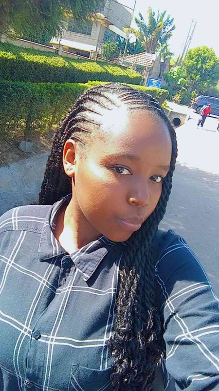

Education
- BSc. Environmental Science (Conservation & Sustainable Resource Management) — JKUAT (2025 – Present, Expected Graduation: 2029)
- Kenya Certificate of Secondary Education (KCSE) — Rae Girls High School (2021 – 2024, Mean Grade: B-)
Core Skills & Proficiency
Environmental Fieldwork & Sampling
Field Notes & Data Recording Protocols
Research & Academic Report Writing
Microsoft Office & Google Workspace
Oral Presentations & Team Collaboration (English & Kiswahili)
Research Interests
My academic interests focus on environmental monitoring, biodiversity conservation, sustainable resource management, and baseline ecological assessments.
Field & Project Experience
| Project / Experience | Year | What I Learned |
|---|---|---|
| 4 Environmental Science Practical Reports | 2025–2026 | Structured scientific writing and analyzing laboratory and field research data. |
| 3 University Field Trips & Campus Walks | 2025–2026 | Recording accurate baseline environmental observations and sampling techniques. |
| Group Research Presentations | 2025–2026 | Collaborating with classmates to organize and present field data clearly. |